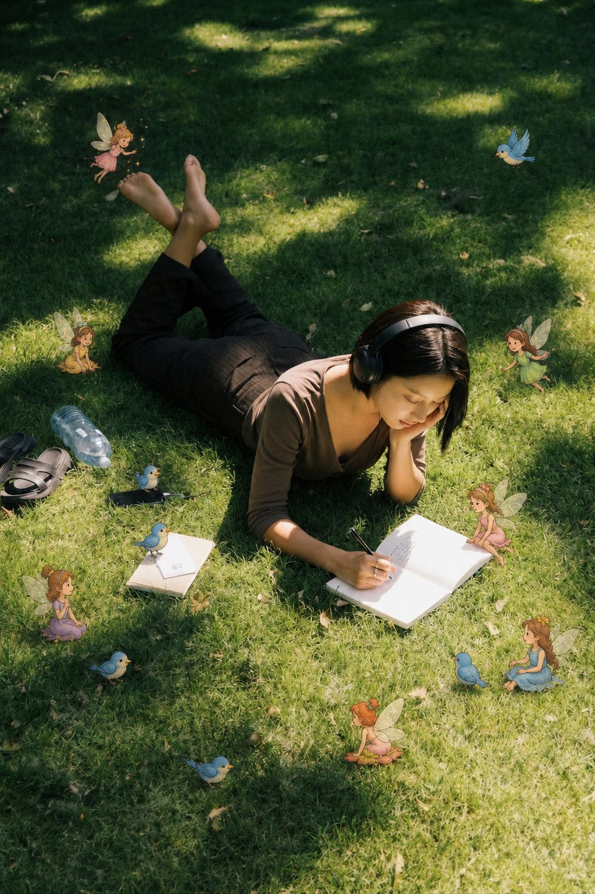
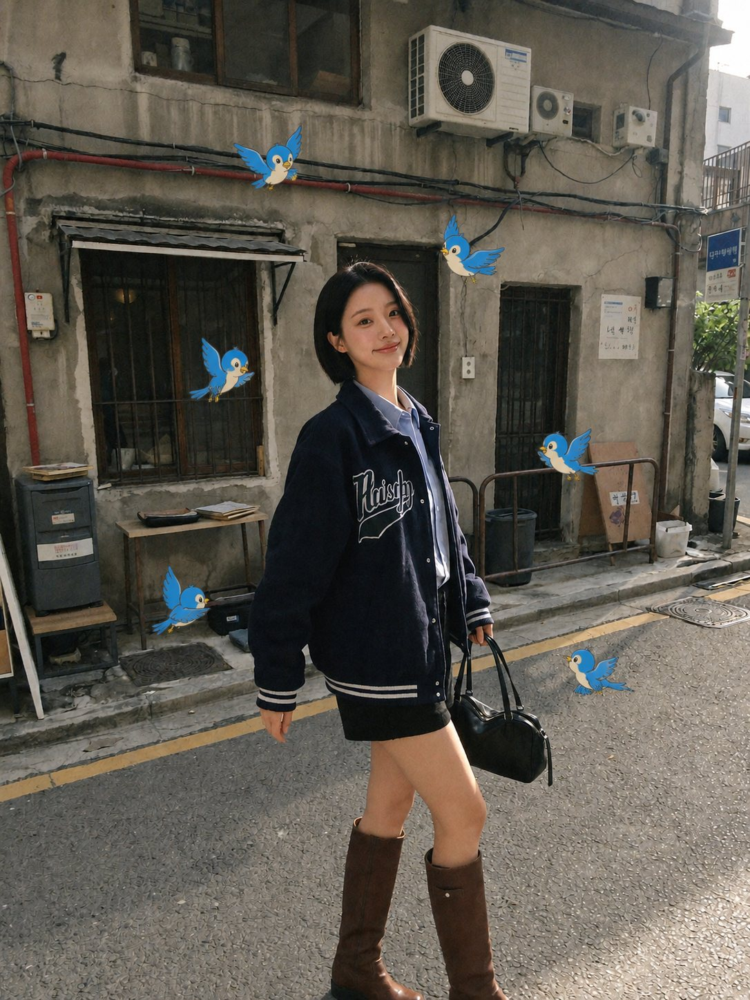
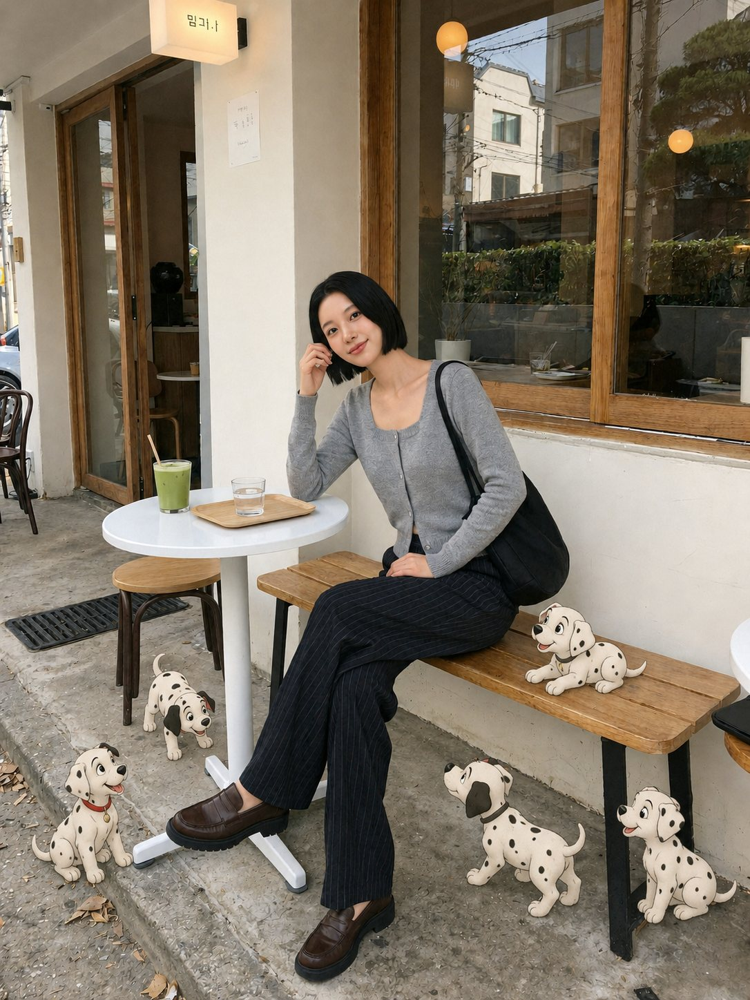
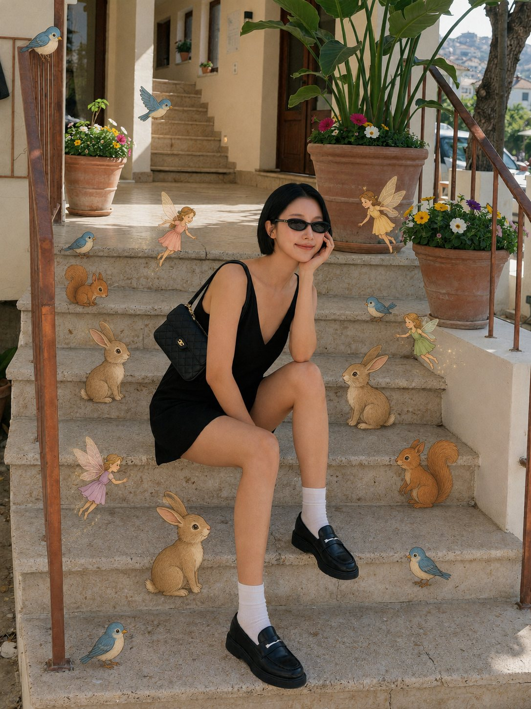
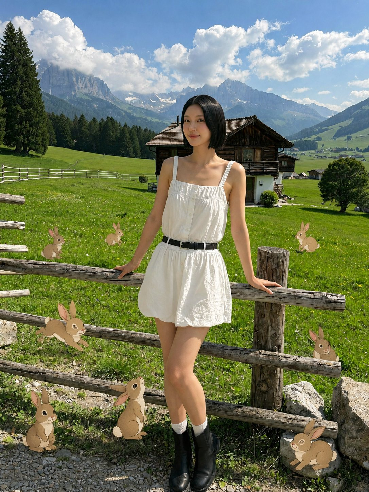
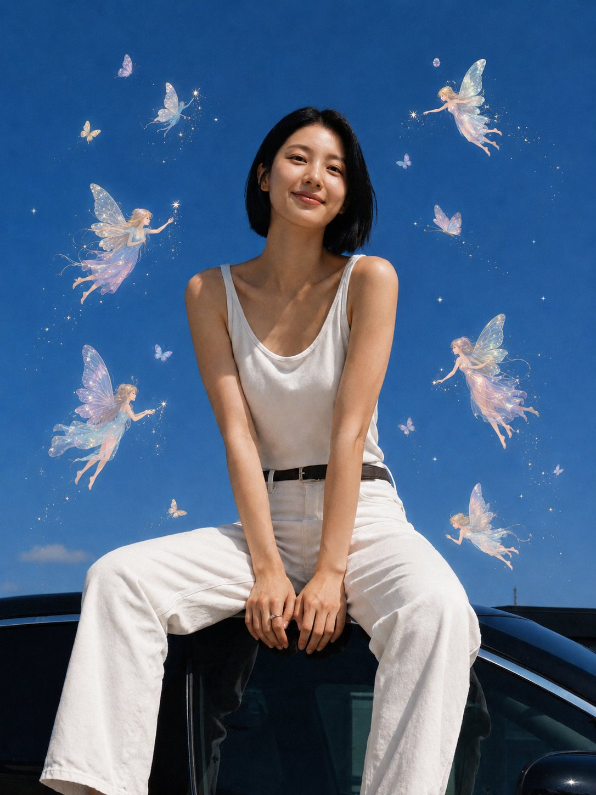
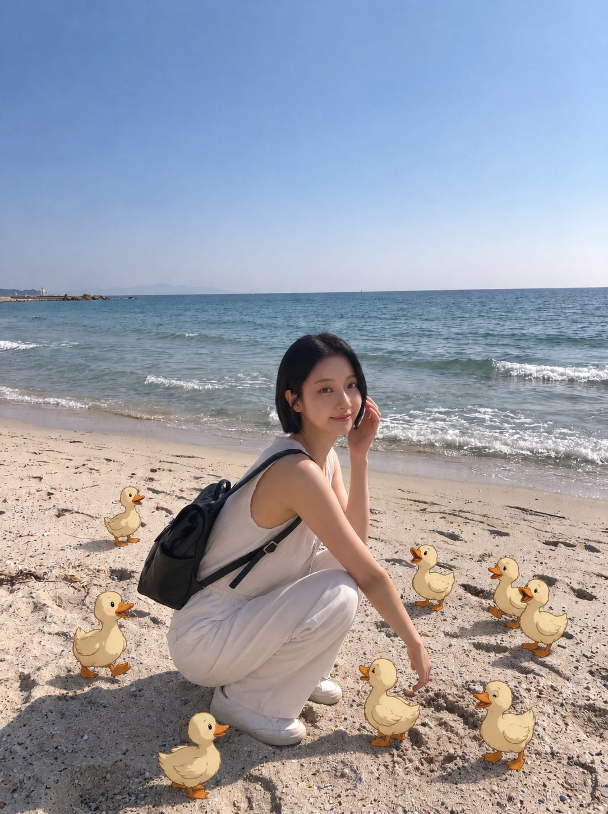
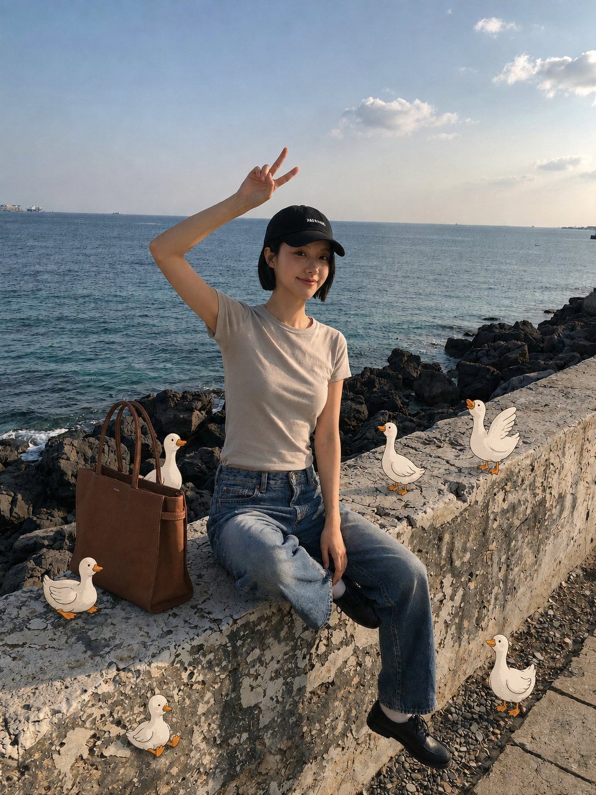

내 사진을 동화 속 장면처럼 만드는 법
원본 사진은 그대로 두고 동화풍 동물 캐릭터만 합성한 뒤 Kling으로 움직이게 만드는 법. 동물 8종 프롬프트 포함.
사용 툴 · ChatGPT, Kling
작업 흐름
STEP 1. GPT로 동물 캐릭터 합성하기
합성할 때 가장 중요한 건 원본 사진 유지입니다. "동화풍으로 바꿔줘"라고 하면 사진 전체가 바뀔 수 있어요. 아래처럼 편집 범위를 캐릭터 추가로만 제한해 주세요.
첨부한 원본 사진은 그대로 유지해줘.
인물의 얼굴, 표정, 자세, 의상, 배경, 구도, 조명, 색감은 절대 변경하지 말아줘.
원본 사진 보존이 최우선이며, 편집 범위는 캐릭터 추가에만 한정해줘.
사진 속 인물 주변에 클래식 핸드드로운 2D 동화 애니메이션 느낌의 [동물/캐릭터]들을 여러 마리 자연스럽게 추가해줘.
캐릭터들은 인물보다 작게, 인물을 가리지 않게 배치해줘.
일부는 바닥에 있고, 일부는 공중에 있으며, 일부는 인물을 바라보는 식으로 다양하게 구성해줘.
사진 속 장면에 원래 함께 있던 것처럼 자연스럽게 합성해줘.
원본 사진을 일러스트화하지 말고, 캐릭터만 추가한 합성 결과로 만들어줘.
STEP 2. Kling으로 영상 만들기
영상에서 인물이 많이 움직이면 얼굴이나 자세가 바뀔 수 있어요. 그래서 인물은 거의 정지, 동물만 움직임으로 설정하는 게 좋습니다.
평화롭고 사랑스러운 분위기.
인물은 거의 정지한 상태를 유지하고, 머리카락이 바람에 아주 살짝 흔들리는 정도만 표현한다.
주변 캐릭터들만 인물 주변에서 부드럽고 사랑스럽게 움직인다.
전체 움직임은 과하지 않고 잔잔하고 섬세하게 유지한다.
카메라는 고정한다.
동물별 프롬프트
모든 GPT 합성 프롬프트는 아래 세 줄로 시작합니다. 그 다음에 동물별 문단을 이어 붙여 사용하세요.
첨부한 원본 사진은 그대로 유지해줘.
인물의 얼굴, 표정, 자세, 의상, 배경, 구도, 조명, 색감은 절대 변경하지 말아줘.
원본 사진 보존이 최우선이며, 편집 범위는 캐릭터 추가에만 한정해줘.
1. 파랑새 & 요정

사진 속 인물 주변에 클래식 핸드드로운 2D 동화 애니메이션 느낌의 파란새 여러 마리와 작은 요정 여러 명을 자연스럽게 추가해줘.
파란새들은 인물 주변 공중과 바닥에 흩어져 배치해줘.
일부는 날아다니고, 일부는 바닥에 앉아 있고, 일부는 인물을 바라보는 느낌이면 좋아.
작은 요정들은 공중에 가볍게 떠 있거나 인물 근처를 맴도는 느낌으로 배치해줘.
캐릭터들은 인물보다 작게, 인물을 가리지 않게 배치해줘.
원본 사진을 일러스트화하지 말고, 캐릭터만 추가한 합성 결과로 만들어줘.
평화롭고 사랑스러운 분위기.
인물은 거의 정지한 상태를 유지하고, 머리카락이 바람에 아주 살짝 흔들리는 정도만 표현한다.
파란새들은 인물 주변에서 부드럽게 날아다니고, 요정들은 가볍게 떠다니며 사랑스럽게 움직인다.
전체 움직임은 잔잔하고 섬세하게 유지한다.
카메라는 고정한다.
2. 파랑새

사진 속 인물 주변에 클래식 핸드드로운 2D 동화 애니메이션 느낌의 파란새 캐릭터들을 여러 마리 자연스럽게 추가해줘.
캐릭터들은 인물보다 작게, 인물을 가리지 않게 배치해줘.
일부는 공중에 날아다니고, 일부는 바닥이나 주변 구조물에 앉아 있는 느낌으로 배치해줘.
전체적으로 사랑스럽고 따뜻한 동화 분위기로 표현해줘.
원본 사진을 일러스트화하지 말고, 파란새 캐릭터만 추가한 합성 결과로 만들어줘.
평화롭고 사랑스러운 분위기.
인물은 거의 움직이지 않고, 머리카락이 바람에 아주 미세하게 흔들리는 정도만 표현한다.
파란새들은 인물 주변에서 부드럽게 날아다니고, 천천히 맴돌며 사랑스럽게 움직인다.
카메라는 고정한다.
3. 강아지

사진 속 인물 주변에 클래식 핸드드로운 2D 동화 애니메이션 느낌의 작은 강아지 캐릭터 여러 마리를 자연스럽게 추가해줘.
강아지 캐릭터는 인물보다 작게, 인물을 가리지 않게 배치해줘.
일부는 바닥에 앉아 있고, 일부는 인물 주변을 따라 걷는 자세, 일부는 인물을 바라보는 자세로 다양하게 구성해줘.
전체적으로 귀엽고 발랄하고 따뜻한 동화 분위기로 표현해줘.
원본 사진을 일러스트화하지 말고, 강아지 캐릭터만 추가한 합성 결과로 만들어줘.
평화롭고 귀여운 분위기.
인물은 거의 움직이지 않고, 머리카락이 바람에 아주 살짝 흔들리는 정도만 표현한다.
주변 강아지들은 꼬리를 흔들거나 고개를 움직이고, 짧게 걷는 정도로만 자연스럽게 움직인다.
카메라는 고정한다.
4. 숲속 동물

사진 속 인물 주변에 클래식 핸드드로운 2D 동화 애니메이션 느낌의 숲속 동물 캐릭터들을 여러 마리 자연스럽게 추가해줘.
기본 구성은 파란새 여러 마리, 토끼 두세 마리, 다람쥐 두세 마리, 작은 요정 여러 명이야.
캐릭터들은 인물보다 작게, 인물을 가리지 않게 배치해줘.
일부는 바닥에 있고, 일부는 공중에 있으며, 일부는 인물을 바라보는 식으로 다양하게 구성해줘.
전체적으로 사랑스럽고 포근한 동화책 분위기를 유지해줘.
원본 사진을 일러스트화하지 말고, 캐릭터만 추가한 합성 결과로 만들어줘.
평화롭고 사랑스러운 분위기.
인물은 거의 움직이지 않고, 머리카락이 아주 살짝 흔들리는 정도만 표현한다.
주변 숲속 동물들만 부드럽게 움직인다.
새들은 천천히 날아다니고, 토끼와 다람쥐는 작게 고개를 움직이거나 가볍게 움직인다.
카메라는 고정한다.
5. 토끼

사진 속 인물 주변에 클래식 핸드드로운 2D 동화 애니메이션 느낌의 토끼 캐릭터 여러 마리를 자연스럽게 추가해줘.
토끼 캐릭터는 인물보다 작게, 인물을 가리지 않게 배치해줘.
일부는 바닥에 앉아 있고, 일부는 가볍게 폴짝이는 자세, 일부는 인물을 올려다보는 자세로 다양하게 구성해줘.
토끼들은 부드러운 표정, 둥근 형태, 따뜻한 동화책 무드로 표현해줘.
원본 사진을 일러스트화하지 말고, 토끼 캐릭터만 추가한 합성 결과로 만들어줘.
평화로운 분위기.
인물은 거의 움직이지 않고, 머리카락이 아주 살짝 흔들리는 정도만 표현한다.
토끼들이 인물 주변에서 가볍게 움직이는 영상.
토끼들은 부드럽고 사랑스럽게 움직이게 해줘.
카메라는 고정한다.
6. 나비 & 요정

사진 속 인물 주변에 클래식 핸드드로운 2D 동화 애니메이션 느낌의 나비 여러 마리와 작은 나비 요정 여러 명을 자연스럽게 추가해줘.
나비들은 인물 주변 공중에 부드럽게 흩어져 배치해줘.
작은 나비 요정들은 인물 주변을 맴도는 듯한 느낌으로 배치해줘.
캐릭터들은 인물보다 작게, 인물을 가리지 않게 배치해줘.
전체적으로 가볍고 몽환적이고 사랑스러운 동화 분위기로 표현해줘.
원본 사진을 일러스트화하지 말고, 캐릭터만 추가한 합성 결과로 만들어줘.
평화롭고 사랑스러운 분위기.
인물은 거의 정지한 상태를 유지하고, 머리카락이 바람에 아주 살짝 흔들리는 정도만 표현한다.
나비들과 작은 요정들은 인물 주변 공중에서 부드럽게 날아다니고, 가볍게 맴돌며 사랑스럽게 움직인다.
전체 움직임은 섬세하고 잔잔하게 유지한다.
카메라는 고정한다.
7. 오리

사진 속 인물 주변에 클래식 핸드드로운 2D 동화 애니메이션 느낌의 오리 캐릭터들을 여러 마리 자연스럽게 추가해줘.
오리 캐릭터는 인물보다 작게, 인물을 가리지 않게 배치해줘.
일부는 바닥에 앉아 있고, 일부는 종종걸음으로 걷는 자세, 일부는 인물을 바라보는 자세로 다양하게 구성해줘.
전체적으로 귀엽고 사랑스럽고 동화적인 분위기로 표현해줘.
원본 사진을 일러스트화하지 말고, 오리 캐릭터만 추가한 합성 결과로 만들어줘.
평화로운 분위기.
인물은 거의 움직이지 않고, 머리카락이 아주 살짝 흔들리는 정도만 표현한다.
오리들은 부드럽고 사랑스럽게 움직이게 해줘.
오리들은 고개를 움직이거나 짧게 걷는 정도로 자연스럽게 움직인다.
카메라는 고정한다.
8. 하얀 거위

사진 속 인물 주변에 클래식 핸드드로운 2D 동화 애니메이션 느낌의 하얀 거위 캐릭터들을 여러 마리 자연스럽게 추가해줘.
하얀 거위 캐릭터는 인물보다 작게, 인물을 가리지 않게 배치해줘.
일부는 바닥에 서 있고, 일부는 앉아 있고, 일부는 날개를 살짝 펼친 자세로 다양하게 구성해줘.
전체적으로 순하고 사랑스럽고 동화적인 분위기로 표현해줘.
원본 사진을 일러스트화하지 말고, 하얀 거위 캐릭터만 추가한 합성 결과로 만들어줘.
평화롭고 귀여운 분위기.
인물은 거의 움직이지 않고, 머리카락이 바람에 아주 살짝 흔들리는 정도만 표현한다.
하얀 거위들은 부드럽고 사랑스럽게 움직인다.
거위들은 고개를 움직이거나 날개를 살짝 흔드는 정도로만 자연스럽게 움직인다.
카메라는 고정한다.
프롬프트 사용 팁
1. 원본 사진을 유지하고 싶다면 꼭 넣기
원본 사진 보존이 최우선이며, 편집 범위는 캐릭터 추가에만 한정해줘.
2. 사진 전체가 바뀌는 걸 막고 싶다면 꼭 넣기
원본 사진을 일러스트화하지 말고, 캐릭터만 추가한 합성 결과로 만들어줘.
3. 영상에서 인물 얼굴이 변하는 걸 줄이고 싶다면 꼭 넣기
인물은 거의 움직이지 않고, 머리카락이 아주 살짝 흔들리는 정도만 표현한다.
카메라는 고정한다.